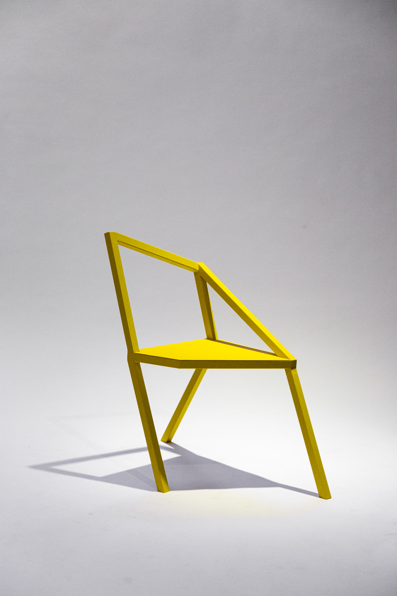
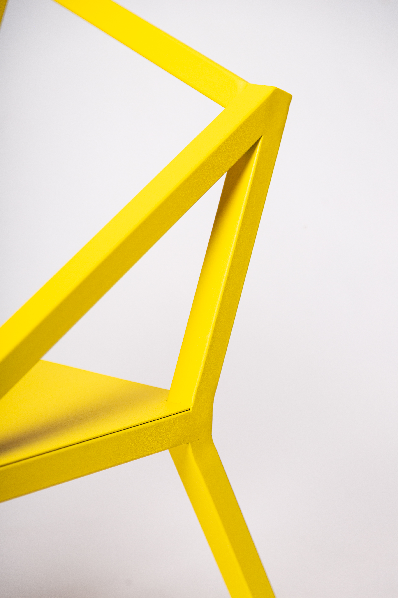
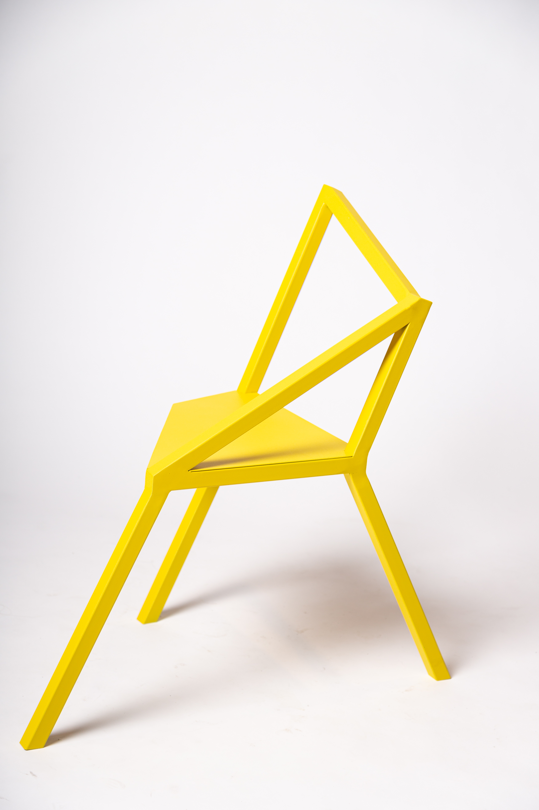
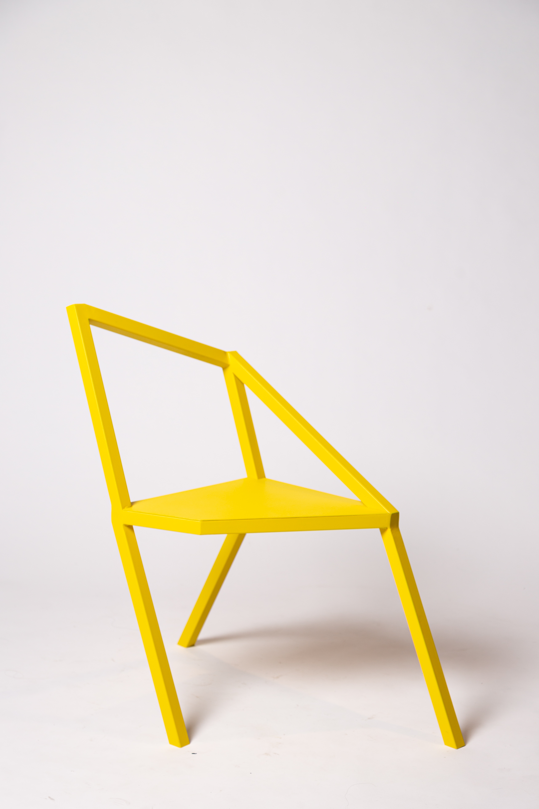
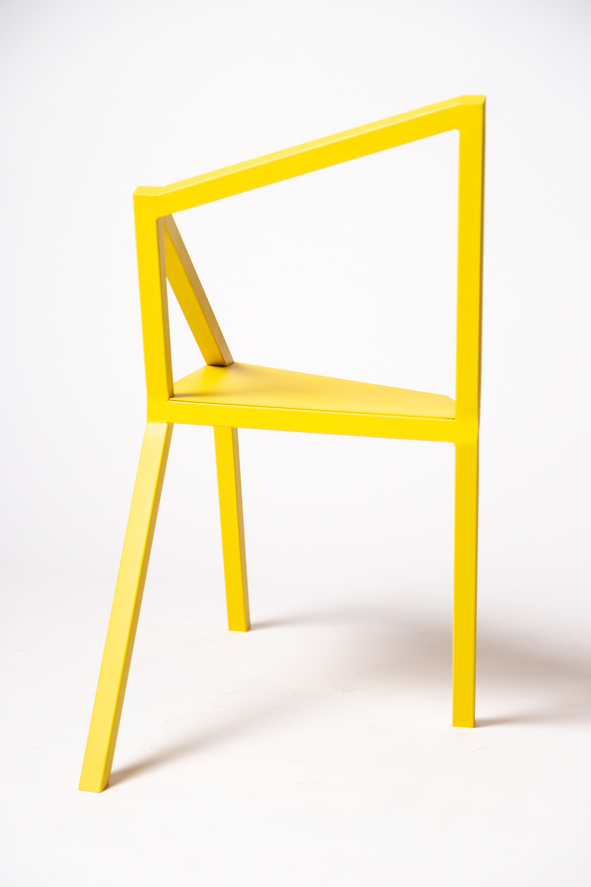
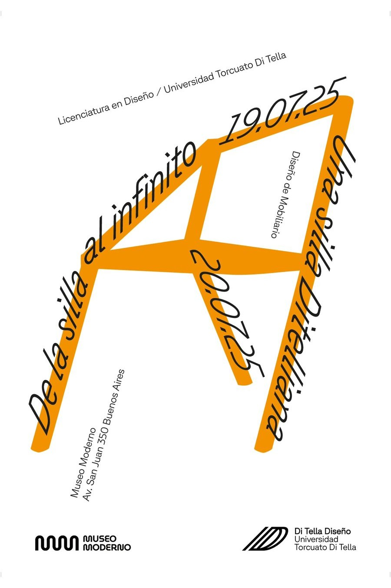

"Silla Impermanente"
Diseñar desde un entorno atravesado por el cambio implica asumir la transformación como condición permanente. La experimentación, la prueba y el error, y la revisión constante no son instancias excepcionales del proceso proyectual. En ese marco, la incomodidad de lo indefinido deja de ser un obstáculo y se convierte en territorio productivo. Designing in an environment shaped by change means accepting transformation as a permanent condition. Experimentation, trial and error, and constant review are not exceptional stages of the design process. Within this framework, the unease of the undefined ceases to be an obstacle and becomes fertile ground.
Esta silla nace desde esa lógica. Su estructura, construida a partir de perfiles metálicos soldados, hace visible el sistema que la sostiene. La geometría es directa, casi esencial, y cada parte responde a una decisión estructural antes que ornamental. This chair was conceived with that approach in mind. Its frame, constructed from welded metal sections, reveals the system that supports it. The geometry is straightforward, almost minimalist, and each part serves a structural purpose rather than an ornamental one.
La impermanencia, entendida como posibilidad de ajuste y relectura, se traduce en una pieza que tensiona equilibrio y asimetría, estabilidad y dinamismo. Impermanence, understood as the possibility of adjustment and reinterpretation, results in a piece that creates a tension between balance and asymmetry, stability and dynamism.
Diseñado por: Morena Guerrieri, Jazmin Novoa, Fatima Pauluk, Julieta Regueira y Marie Teufel Design by: Morena Guerrieri, Jazmin Novoa, Fatima Pauluk, Julieta Regueira y Marie Teufel


Fue construida mediante la soldadura de perfiles metálicos cuadrados de 30mm x 30mm y una chapa lisa galvanizada de 0,10mm, terminada con pintura al horno. It was constructed by welding together 30mm x 30mm square metal sections and 0.10mm-thick smooth galvanised sheet metal, and finished with a baked-on paint coating.
Esta silla fue expuesta en el Museo Moderno de Buenos Aires, Argentina, debido a un acuerdo con la universidad.
También se encuentra entre las 8 sillas finales seleccionadas por el premio del "salon del mueble argentino".
This chair was exhibited at the "Museo Moderno" in Buenos Aires, Argentina, following an agreement with the university.
It is also one of the eight chairs shortlisted for the "Salón del Mueble Argentino" award.



Afiche para la exposición en el Museo Moderno Poster for the exhibition at the Modern Museum

Ver imágenes del proceso View images of the process